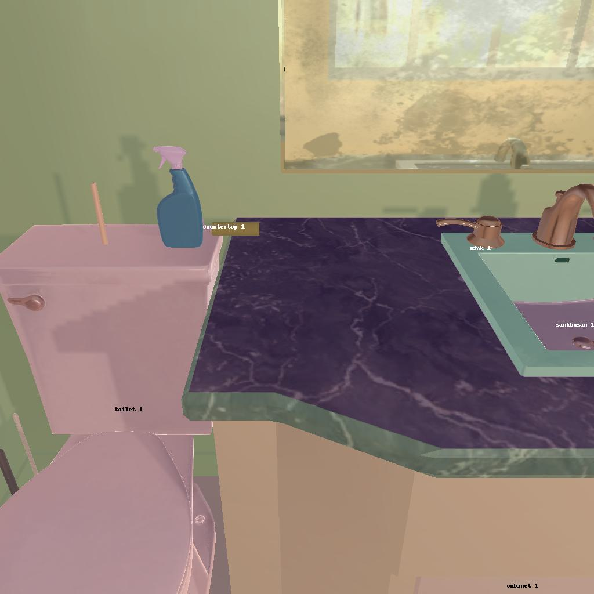
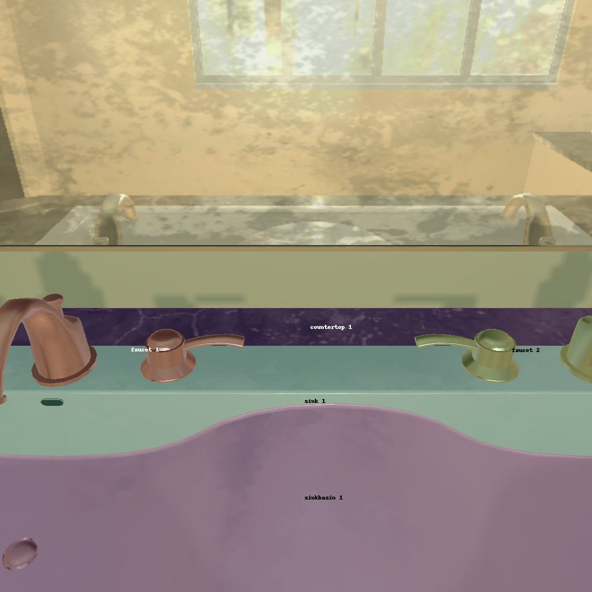

---------------------------------------------------------task: 11---------------------------------------------------------
--------------------------------------------------------------------------------------------------------------------------------------------------------------------
--------------------------------------------------------------------------------------------------------------------------------------------------------------------
Step:--------------------------------------------------------------------------2-------------------------------------------------------------------------------
----------------------------------------
VLM Prompt:
Image1:
Image2:
Image3:
**Instruction**
1. Analyze the provided image to identify all visible household objects, focusing on those relevant to the task description "clean some soapbar and put it in bathtubbasin."
2. Use the analysis of the image and the task hint "The agent must find an object of the desired type, pick it up, go to a sink or a basin, clean the object with a sink or basin, and then find the correct location to place it and put it down there. The agent does not need to use soap bottle or faucet to clean the object, and the agent just needs to do action that is "clean the object with the sink or sink basin"." to answer the question: what is the most reasonable action in the choices for the task description "clean some soapbar and put it in bathtubbasin"?
4. Decide and write the answer using the template: The answer is: (i): , where i is the real number. If there is no desired object in the image, search every place based on **Initial Observation** to find the object. And if no one is exactly correct, choose a similar answer.
**Initial Observation**
You are in the middle of a room. Looking quickly around you, you can see bathtub (1), bathtubbasin (1), toilet (1), cabinet (1-2), countertop (1), sink (1), sinkbasin (1), garbagecan (1)
**Answer Choices**
(1): go to bathtub 1
(2): go to bathtubbasin 1
(3): go to toilet 1
(4): go to cabinet 1
(5): go to countertop 1
(6): go to sink 1
(7): go to cabinet 2
(8): go to garbagecan 1
(9): take faucet 1 from sinkbasin 1
(10): take faucet 2 from sinkbasin 1
(11): examine sinkbasin 1
**Answer**
Let's think step by step by following the instructions.
----------------------------------------
----------------------------------------
Original Response:
First, we need to identify all visible household objects relevant to the task description "clean some soapbar and put it in bathtubbasin." In the provided images, we can see a sink, sinkbasin, countertop, cabinet, and bathtubbasin, but no soapbar is visible.
Based on the task hint, the agent must find an object of the desired type (soapbar) and then clean it with a sink or basin. Since no soapbar is visible in the images, we must search every place based on the Initial Observation to find the object.
The most reasonable action for the task description "clean some soapbar and put it in bathtubbasin" is to first locate the soapbar. Since it is not visible in the images, we must check places where a soapbar might be stored, such as a cabinet. Therefore, the next step would be to go to a cabinet to search for the soapbar.
The answer is: (4): go to cabinet 1.
----------------------------------------
----------------------------------------
>>> Refine Original VLM Response and Get Pure Action: go to cabinet 1
----------------------------------------
-----------------------------------------------------------------
Running time: 28.809519290924072 seconds
Total Money: 6.390920000000001
-----------------------------------------------------------------
-----------------------------------------------------------------
Text Observation:You arrive at loc 3. The cabinet 1 is closed.
-----------------------------------------------------------------
UNSUCCEED